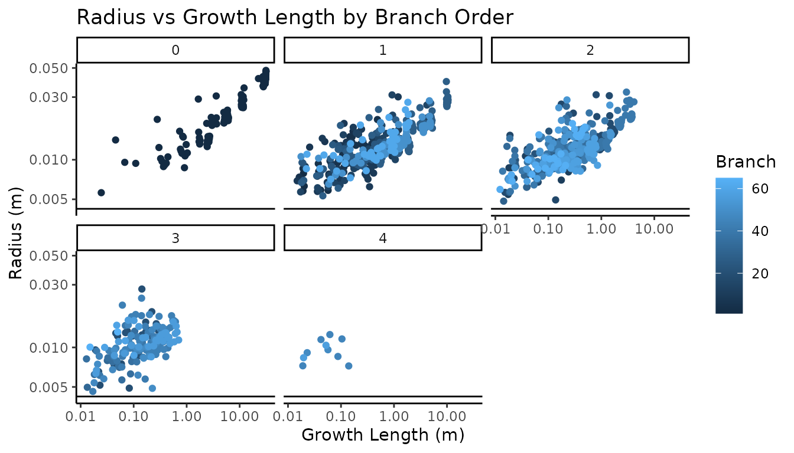

Background
Real Twig was designed and tested using QSMs created with the TreeQSM modeling software. However, if a QSM provides parent-child cylinder relationships, Real Twig will work, as is the case of the SimpleForest software. If high quality point clouds, QSMs with the proper input settings, and species specific twig diameter measurements are supplied, you can expect to get good estimates of tree volume.
While Real Twig can provide excellent tree volume estimates, it can not transform poor quality data into good data. As a general rule of thumb, the closer the QSM resembles the actual tree before correction, the better the results will be after correction. Real Twig performs best when the topology of the tree is mostly correct, and only the cylinder sizes are the main sources of QSM error. Errors in QSM topology become readily apparent after correction, so Real Twig can also be used to visually validate QSM topology without reference data.
Installation
You can install the package directly from CRAN:
install.packages("rTwig")Or the latest development version from GitHub:
devtools::install_github("https://github.com/aidanmorales/rTwig")Load Packages
The first step is to load the rTwig package. Real Twig works well when paired with packages from the Tidyverse, so we will also load the dplyr package to help with data manipulation.
Import QSM
SimpleForest exports its QSMs as .csv files, so they are easy to load
into R using the built in read.csv() function. If the QSM
contains thousands of cylinders, it is much faster to use the
fread() function from the data.table package
to take advantage of multi-threaded support.
# QSM directory
file <- system.file("extdata/QSM.csv", package = "rTwig")
# Import and save QSM cylinder data
cylinder <- read.csv(file)Let’s take a look at the SimpleForest cylinder data.
str(cylinder)
#> 'data.frame': 1149 obs. of 17 variables:
#> $ ID : int 0 1 2 3 4 5 6 7 8 9 ...
#> $ parentID : int -1 0 1 2 3 4 5 6 7 8 ...
#> $ startX : num 0.761 0.759 0.771 0.768 0.765 ...
#> $ startY : num -16.4 -16.4 -16.4 -16.3 -16.4 ...
#> $ startZ : num 254 254 254 254 254 ...
#> $ endX : num 0.759 0.771 0.768 0.765 0.769 ...
#> $ endY : num -16.4 -16.4 -16.3 -16.4 -16.4 ...
#> $ endZ : num 254 254 254 254 254 ...
#> $ radius : num 0.0472 0.0479 0.0469 0.0467 0.0453 ...
#> $ length : num 0.0497 0.0529 0.0535 0.0525 0.0528 ...
#> $ growthLength : num 31.4 31.4 31.3 31.3 31.2 ...
#> $ averagePointDistance: num 0.00589 0.00378 0.00205 0.00246 0.00251 ...
#> $ segmentID : int 0 0 0 0 0 0 0 0 0 0 ...
#> $ parentSegmentID : int -1 -1 -1 -1 -1 -1 -1 -1 -1 -1 ...
#> $ branchOrder : int 0 0 0 0 0 0 0 0 0 0 ...
#> $ reverseBranchOrder : int 18 18 18 18 18 18 18 18 18 18 ...
#> $ branchID : int 0 0 0 0 0 0 0 0 0 0 ...Cylinder Data
Next, we have to update the parent-child ordering in the cylinder
data to allow for path analysis. We need the first cylinder ID to have
an index of 0. Let’s update the cylinders using the
update_cylinders() function and check to make sure the
parent-child ordering is sequential without any gaps. Many of the extra
QSM variables are all ready included with SimpleForest QSMs, so they are
only calculated in this step if they are missing.
# Update cylinder data
cylinder <- update_cylinders(cylinder)
# Check ordering
cylinder %>%
select(branchID, parentID, ID) %>%
head()
#> # A tidytable: 6 × 3
#> branchID parentID ID
#> <int> <int> <int>
#> 1 0 -1 0
#> 2 0 0 1
#> 3 0 1 2
#> 4 0 2 3
#> 5 0 3 4
#> 6 0 4 5Topology
Before we correct the QSM, it is often worthwhile to check the
quality of the QSM by plotting it against its input point cloud. To do
this, we load the point cloud and save it as a data frame, with the
first three columns as the x, y, and z columns. We do this with the
plot_qsm() function.
# Load the input point cloud
file <- system.file("extdata/cloud.txt", package = "rTwig")
cloud <- read.table(file, header = FALSE)
# Plot the qsm and point cloud
plot_qsm(cylinder = cylinder, cloud = cloud, radius = cylinder$radius)Twig Diameters
Before we can correct the QSM radii, we need to know what our real
twig diameter is. For this example tree, the species is a Kentucky
coffee tree (Gymnocladus dioicus), which has nice, stout twigs.
rTwig comes with a data base of twigs that can be called by typing in
the twigs data set. The data set includes the average twig
radius, the min and max radius, the standard deviation, and the
coefficient of variation. Let’s look at the twig data set and find the
twig diameter for Kentucky coffee tree.
# Look at the twigs database
twigs
#> # A tibble: 96 × 7
#> scientific.name radius.mm n min max std cv
#> <chr> <dbl> <dbl> <dbl> <dbl> <dbl> <dbl>
#> 1 Abies concolor 1.43 21 0.89 1.9 0.28 0.19
#> 2 Abies spp. 1.43 21 0.89 1.9 0.28 0.19
#> 3 Acer platanoides 1.39 30 0.89 2.03 0.3 0.21
#> 4 Acer rubrum 1.18 30 0.89 1.52 0.16 0.14
#> 5 Acer saccharinum 1.41 14 0.89 1.9 0.27 0.2
#> 6 Acer saccharum 1.2 30 0.89 1.65 0.23 0.19
#> 7 Acer spp. 1.29 104 0.89 2.03 0.23 0.18
#> 8 Aesculus flava 2.67 8 2.29 2.79 0.2 0.08
#> 9 Aesculus spp. 2.67 8 2.29 2.79 0.2 0.08
#> 10 Betula nigra 0.85 30 0.51 1.52 0.23 0.27
#> # ℹ 86 more rows
# Find our species
filter(twigs, scientific.name == "Gymnocladus dioicus")
#> # A tibble: 1 × 7
#> scientific.name radius.mm n min max std cv
#> <chr> <dbl> <dbl> <dbl> <dbl> <dbl> <dbl>
#> 1 Gymnocladus dioicus 4.23 30 2.79 6.6 0.87 0.2Summary Metrics
Before we correct the QSM, Let’s take a look at the current metrics,
so we can compare the tree volume before and after correction. We can do
this with the qsm_summary() function. We can also make a
plot of the radius versus the growth length to see how much
overestimation there is in the twig radii.
# QSM summary
qsm_summary(cylinder, radius = "unmodified")
#> [[1]]
#> # A tidytable: 5 × 3
#> BranchOrder Tot.vol.L Tot.sa.m2
#> <int> <dbl> <dbl>
#> 1 0 12.9 0.768
#> 2 1 8.70 1.07
#> 3 2 6.46 0.871
#> 4 3 1.82 0.298
#> 5 4 0.0723 0.0148
#>
#> [[2]]
#> # A tidytable: 1 × 8
#> QSM.dbh.cm QSM.ht.m Stem.vol.L Branch.vol.L Tot.vol.L Stem.sa.m2 Branch.sa.m2
#> <dbl> <dbl> <dbl> <dbl> <dbl> <dbl> <dbl>
#> 1 7.39 3.67 12.9 17.1 30.0 0.768 2.26
#> # ℹ 1 more variable: Tot.sa.m2 <dbl>
Looking at the diagnostic plot on a log log scale, with the measured twig radius as the horizontal line, we can see that all of the twig radii are overestimated, with increasing radii variation as the growth length approaches zero. There is not a very clear pattern in any of the individual branch tapers.
Correct Radii
Now we can correct our QSM cylinder radii with the
correct_radii() function. In this step, we model each path
in the tree separately, where poorly fit cylinders are identified and
removed, and a GAM is fit, where the intercept is the measured twig
radius, and the growth length predicts the cylinder radius. Let’s
correct the cylinder radii on our Kentucky coffee tree and look at the
new volume estimates and diagnostic plots.
# Correct cylinder radii
cylinder <- correct_radii(cylinder, twigRad = 4.23)
# Corrected QSM summary
qsm_summary(cylinder, radius = "modified")
#> [[1]]
#> # A tidytable: 5 × 3
#> BranchOrder Tot.vol.L Tot.sa.m2
#> <int> <dbl> <dbl>
#> 1 0 12.0 0.722
#> 2 1 5.98 0.855
#> 3 2 3.24 0.572
#> 4 3 0.508 0.156
#> 5 4 0.0155 0.00695
#>
#> [[2]]
#> # A tidytable: 1 × 8
#> QSM.dbh.cm QSM.ht.m Stem.vol.L Branch.vol.L Tot.vol.L Stem.sa.m2 Branch.sa.m2
#> <dbl> <dbl> <dbl> <dbl> <dbl> <dbl> <dbl>
#> 1 7.39 3.67 12.0 9.75 21.7 0.722 1.59
#> # ℹ 1 more variable: Tot.sa.m2 <dbl>Here we can see that we reduced the volume of the QSM by around 8 liters, which is around a 36% overestimation in volume before correction. Kentucky coffee tree has relatively large twigs, so the overestimation is not as severe as a tree with much smaller twigs, that can have upwards of >200% overestimation in some cases.
Looking at the diagnostic plot, we can see that individual branches can clearly be identified by their unique allometry. Notice how nearly all of the volume reduction occurred in the higher order branches, with the main stem remaining nearly unchanged. The branches now taper towards the measured twig radius for Kentucky coffee tree. Getting the real twig diameter is critical, as too high a value will overestimate volume, and too low a value will underestimate total volume, with the over or underestimate being proportional to the number of twigs and small branches in the tree. If your species is not available in the database, we have found that the genus level twig radius average is a good substitute.
Visualization
Optionally, we can smooth our QSM by ensuring all of the cylinders
are connected. This is a visual change and does not affect the volume
estimates. We can do this with the smooth_qsm() function,
and plot the results with the plot_qsm() function. The
different colors are the different branch orders. We can also color our
QSM by many different variables and palettes. See the
plot_qsm() documentation for more details.
# Smooth QSM
cylinder <- smooth_qsm(cylinder)
# Plot QSM
plot_qsm(cylinder)
# QSM Custom Colors & Piping
cylinder %>%
plot_qsm(
radius = .$radius,
cyl_color = .$reverseBranchOrder,
cyl_palette = "magma"
)
# Plot Twigs Colored by Unique Segment
cylinder %>%
filter(reverseBranchOrder == 1) %>%
plot_qsm(
radius = .$radius,
cyl_color = .$reverseBranchOrder,
cyl_palette = "rainbow"
)We can also save our QSM as a mesh (.ply extension) for use in other
modeling programs with the export_mesh() function. The same
colors and palettes found in the plot_qsm() function can be
used to color the mesh.
# Export Mesh Colored by RBO
cylinder %>%
export_mesh(
filename = "QSM_mesh",
radius = .$radius,
cyl_color = .$reverseBranchOrder,
cyl_palette = "magma"
)
# Export Twigs Colored by Unique Segments
cylinder %>%
filter(reverseBranchOrder == 1) %>%
export_mesh(
filename = "QSM_mesh",
radius = .$radius,
cyl_color = .$reverseBranchOrder,
cyl_palette = "rainbow"
)Workflow & Best Practices
Below is an overview of the typical rTwig processing chain. When dealing with multiple trees, we advise creating a master data frame in a tidy format, where each unique tree is a row, and the columns are the tree id, the directory to the QSM .csv file, and the species twig diameter, all of which can be tailored to your workflow needs. Then it is a simple matter of looping over the master data frame, correcting each tree, and saving the results to a master list. Make sure to read each function’s documentation for more examples and unique features.
# Import QSM
file <- system.file("extdata/QSM.csv", package = "rTwig")
cylinder <- read.csv(file)
# Real Twig Main Steps
cylinder <- update_cylinders(cylinder)
cylinder <- correct_radii(cylinder, twigRad = 4.23)
# Summary Metrics
qsm_summary(cylinder)
# Plot Results
plot_qsm(cylinder, color = "GrowthLength")Validation
How do we know if Real Twig returns accurate volume estimates? We can validate our method against a high quality reference data set that was both laser scanner and destructively sampled. The laser scanning was done in leaf-off conditions with a Riegl VZ-400. The destructive sampling contains total branch and main stem dry mass, and also basic density for both the main stem and the branches.
It is important to note that Real Twig was not tested with SimpleForest during its development. While Real Twig does improve volume estimates for SimpleForest versus its built in allometric corrections, there are still improvements to be made, as SimpleForest QSM cylinders are generally much more overestimated than TreeQSM cylinders, making the identification of “good” cylinders difficult.
Below are the mass estimates and statistics using SimpleForest v5.3.2 with its built in vessel volume correction, and Real Twig applied to the same QSMs.
| SimpleForest | |||
| Metric | Total Woody AGB | Main Stem Biomass | Branch Biomass |
|---|---|---|---|
| Mean Relative Error (%) | 51.031 | 27.775 | 174.363 |
| RMSE (kg) | 177.462 | 48.287 | 141.470 |
| Relative RMSE (%) | 42.285 | 14.720 | 154.385 |
| CCC | 0.934 | 0.990 | 0.669 |
| Real Twig (SimpleForest) | |||
| Metric | Total Woody AGB | Main Stem Biomass | Branch Biomass |
|---|---|---|---|
| Mean Relative Error (%) | 15.850 | 11.909 | 41.238 |
| RMSE (kg) | 27.605 | 24.525 | 18.651 |
| Relative RMSE (%) | 6.578 | 7.476 | 20.353 |
| CCC | 0.998 | 0.997 | 0.985 |